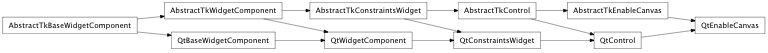
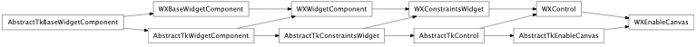

Bases: enaml.components.control.Control
An Enable canvas widget that will draw any Enable Component object.
The enable.component.Component instance to draw.
An EnableCanvas ignores its hug_width by default, so that it expands freely in width.
An Enable Canvas ignore its hug_height by default, so that it expands freely in height.
Overridden parent class trait
alias of __NoInterface__

Bases: enaml.backends.qt.qt_control.QtControl, enaml.components.enable_canvas.AbstractTkEnableCanvas
A Qt implementation of EnableCanvas
The EnableWindow that is created to hold the component
Creates an EnableWindow instance to hold the component and uses that instance control as the toolkit widget. This assumes that enable picks the appropriate toolkit backend.

Bases: enaml.backends.wx.wx_control.WXControl, enaml.components.enable_canvas.AbstractTkEnableCanvas
A wxPython implementation of EnableCanvas
The EnableWindow that is created to hold the component
Creates an EnableWindow instance to hold the component and uses that instance control as the toolkit widget. This assumes that enable picks the appropriate toolkit backend.